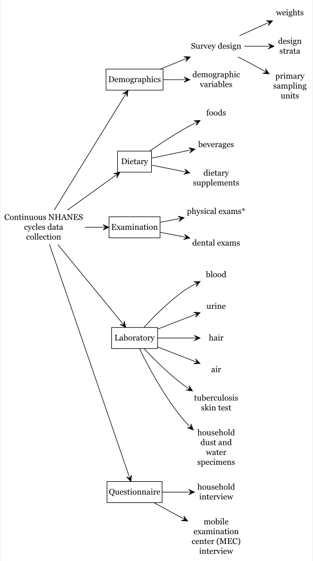
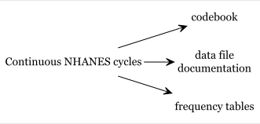

Importing NHANES to R
This tutorial provides comprehensive instructions on accessing the National Health and Nutrition Examination Survey (NHANES) dataset from the US Centers for Disease Control and Prevention (CDC) website and importing it into the RStudio environment. It covers:
- Introduction to the NHANES dataset, highlighting its significance in evaluating the health and nutritional status of U.S. adults and children.
- Sampling Procedure details, explaining the multi-stage sampling strategy and emphasizing the importance of using survey features like weights, strata, and primary sampling units for population-level estimates.
- Survey History with a visualization representing different NHANES survey cycles.
- NHANES Data Files and Documents:
- Explains the data’s file format, mostly in SAS transport file format (.xpt).
- Breaks down the NHANES components, which include demographics, dietary, examination, laboratory, and questionnaire data.
- Provides guidelines on combining data from different cycles and handling missing data or outliers.
- Accessing NHANES Data:
- Directly from the CDC website: A step-by-step guide with accompanying images, illustrating how to navigate the CDC website, download the data, and interpret the accompanying codebook.
- Using R packages, specifically the nhanesA package: A concise guide on how to download and get summaries of the NHANES data using this R package.
Before installing a package from GitHub, it’s better to check whether you installed the right version of Rtools
Overview
National Center for Health Statistics (NCHS) conducts National Health and Nutrition Examination Survey (NHANES) (CDC,NCHS 2023). These surveys are designed to evaluate the health and nutritional status of U.S. adults and children. These surveys are being administered in two-year cycles or intervals starting from 1999-2000. Prior to 1999, a number of surveys were conducted (e.g., NHANES III), but in our discussion, we will mostly restrict our discussions to continuous NHANES (e.g., NHANES 1999-2000 to NHANES 2017-2018).
CDC,NCHS (2023)
Sampling Procedure:
It is a probabilistic sample (we know probability of getting selected for all individuals). This sample is unlikely to be representative of the entire population, as some under/oversampling occurs (unlike SRS), and samples may be dependent (due to proximity of some samples). For example, household with the following characteristics may be oversampled in NHANES, e.g., African Americans, Mexican Americans, Low income White Americans, Persons age 60+ years.
Sampling Procedure:
- not obtained via simple random sample
- multistage sample designs
- A sample weight is assigned to each sample person where weight = the number of people in the target population represented by that sample person in NHANES
NHANES used multistage sample designs:
- Stage 1: PSU/clusters = geographically contiguous counties. 50 states - divided into ~3100 counties. Each PSU is assigned to a strata (e.g., urban/rural or PSU size etc.). The counties are randomly/PPS selected using a 2-per-stratum design. Complex sample variance estimation requires PSU + strata (masking involved).
- Stage 2: each selected county is broken into segments (with at least ~50-100 housing units). Segments are randomly/PPS selected.
- Stage 3: each selected segment is divided into households. Households are randomly selected.
- Stage 4: Within each sampled household, an individual is randomly selected.
To obtain population-level estimate, we must utilize the survey features (weights, strata, PSU/cluster)
Survey history
Overall NHANES survey history

NHANES datafile and documents
File format
The Continuous NHANES files are stored in the NHANES website as SAS transport file formats (.xpt). You can import this data in any statistical package that supports this file format.
Continuous NHANES Components
Continuous NHANES components separated to reduce the amount of time to download and documentation size:

Broadly, continuous NHANES data are available in 5 categories:
- Demographics
- Dietary
- Examination
- Laboratory
- Questionnaire
Combining data
Different cycles
It is possible to combine datasets from different years/cycles together in NHANES. However, NHANES is a cross-sectional data, and identification of the same person accross different cycles is not possible in the public release datasets. For appending data from different cycles, please make sure that the variable names/labels are the same/identical in years under consideration (in some years, names and labels do change).
The following data have not been released on the NHANES website as public release files due to confidentiality concerns:
- adolescent data on alcohol use
- smoking
- sexual behavior
- reproductive health and drug use
Within the same cycle
Within NHANES datasets in a given cycle, each sampled person has an unique identifier sequence number (variable SEQN).
Missing data and outliers
CDC (2023) recommends:
CDC (2023)
- “As a general rule, if 10% or less of your data for a variable are missing from your analytic dataset, it is usually acceptable to continue your analysis without further evaluation or adjustment. However, if more than 10% of the data for a variable are missing, you may need to determine whether the missing values are distributed equally across socio-demographic characteristics, and decide whether further imputation of missing values or use of adjusted weights are necessary.”
- “If you fail to identify ‘refusal’ or ‘do not know’ as types of missing data, and treat the assigned values for ‘refused’ or ‘do not know’ as real values, you will get distorted results in your statistical analyses. Therefore, it is important to recode ‘refused’ or ‘don’t know’ responses as missing values (either as a period (.) for numeric variables or as a blank for character variables).”
- “Outliers with extremely large weights could have an influential impact on your estimates. You will have to decide whether to keep these influential outliers in your analysis or not. It is up to the analysts to make that decision.”
NHANES documents

The following websites could be helpful: - For more information about NHANES design.
- Visit US CDC website and do a variable keyword search based on your research interest (e.g., arthritis).
Accessing NHANES Data Directly from the CDC website
In the following example, we will see how to download ‘Demographics’ data, and check associated variable in that dataset.

NHANES 1999-2000 and onward survey datasets are publicly available at wwwn.cdc.gov/nchs/nhanes/
- Step 1: Say, for example, we are interested about the NHANES 2015-2016 survey. Clicking the associated link in the above Figure gets us to the page for the corresponding cycle (see below).

-
Step 2: There are various types of data available for this survey. Let’s explore the demographic information from this cycle. These data are mostly available in the form of SAS
XPTformat (see below).

- Step 3: We can download the XPT data in the local PC folder and read the data into R as as follows:
Show the code
DEMO <- read.xport("Data/accessing/DEMO_I.XPT")-
Step 4: Once data is imported in RStudio, we will see the
DEMOobject listed under data window (see below):
-
Step 5: We can also check the variable names in this
DEMOdataset as follows:
Show the code
names(DEMO)
#> [1] "SEQN" "SDDSRVYR" "RIDSTATR" "RIAGENDR" "RIDAGEYR" "RIDAGEMN"
#> [7] "RIDRETH1" "RIDRETH3" "RIDEXMON" "RIDEXAGM" "DMQMILIZ" "DMQADFC"
#> [13] "DMDBORN4" "DMDCITZN" "DMDYRSUS" "DMDEDUC3" "DMDEDUC2" "DMDMARTL"
#> [19] "RIDEXPRG" "SIALANG" "SIAPROXY" "SIAINTRP" "FIALANG" "FIAPROXY"
#> [25] "FIAINTRP" "MIALANG" "MIAPROXY" "MIAINTRP" "AIALANGA" "DMDHHSIZ"
#> [31] "DMDFMSIZ" "DMDHHSZA" "DMDHHSZB" "DMDHHSZE" "DMDHRGND" "DMDHRAGE"
#> [37] "DMDHRBR4" "DMDHREDU" "DMDHRMAR" "DMDHSEDU" "WTINT2YR" "WTMEC2YR"
#> [43] "SDMVPSU" "SDMVSTRA" "INDHHIN2" "INDFMIN2" "INDFMPIR"-
Step 6: We can open the data in RStudio in the dataview window (by clicking the
DEMOdata from the data window). The next Figure shows only a few columns and rows from this large dataset. Note that there are some values marked as “NA”, which represents missing values.

-
Step 7: There is a column name associated with each column, e.g.,
DMDHSEDUin the first column in the above Figure. To understand what the column names mean in this Figure, we need to take a look at the codebook. To access codebook, click the'DEMO|Doc'link (in step 2). This will show the data documentation and associated codebook (see the next Figure).

-
Step 8: We can see a link for the column or variable
DMDHSEDUin the table of content (in the above Figure). Clicking that link will provide us further information about what this variable means (see the next Figure).
-
Step 9: We can assess if the numbers reported under count and cumulative (from the above Figure) matches with what we get from the
DEMOdata we just imported (particularly, for theDMDHSEDUvariable):
Accessing NHANES Data Using R Packages
nhanesA package
R package nhanesA provides a convenient way to download and analyze NHANES survey data.
RNHANES (Susmann 2016) is another packages for downloading the NHANES data easily.
-
Step 1: Witin the CDC website, NHANES data are available in 5 categories
- Demographics (
DEMO) - Dietary (
DIET) - Examination (
EXAM) - Laboratory (
LAB) - Questionnaire (
Q)
- Demographics (
To get a list of available variables within a data file, we run the following command (e.g., we check variable names within DEMO data):
Show the code
nhanesTables(data_group='DEMO', year=2015)- Step 2: We can obtain the summaries of the downloaded data as follows (see below):
Show the code
demo <- nhanes('DEMO_I')
names(demo)
#> [1] "SEQN" "SDDSRVYR" "RIDSTATR" "RIAGENDR" "RIDAGEYR" "RIDAGEMN"
#> [7] "RIDRETH1" "RIDRETH3" "RIDEXMON" "RIDEXAGM" "DMQMILIZ" "DMQADFC"
#> [13] "DMDBORN4" "DMDCITZN" "DMDYRSUS" "DMDEDUC3" "DMDEDUC2" "DMDMARTL"
#> [19] "RIDEXPRG" "SIALANG" "SIAPROXY" "SIAINTRP" "FIALANG" "FIAPROXY"
#> [25] "FIAINTRP" "MIALANG" "MIAPROXY" "MIAINTRP" "AIALANGA" "DMDHHSIZ"
#> [31] "DMDFMSIZ" "DMDHHSZA" "DMDHHSZB" "DMDHHSZE" "DMDHRGND" "DMDHRAGE"
#> [37] "DMDHRBR4" "DMDHREDU" "DMDHRMAR" "DMDHSEDU" "WTINT2YR" "WTMEC2YR"
#> [43] "SDMVPSU" "SDMVSTRA" "INDHHIN2" "INDFMIN2" "INDFMPIR"
table(demo$DMDHSEDU) # Frequency table
#>
#> 1 2 3 4 5 7 9
#> 619 511 980 1462 1629 2 23
cumsum(table(demo$DMDHSEDU)) # Cumulative frequency table
#> 1 2 3 4 5 7 9
#> 619 1130 2110 3572 5201 5203 5226
length(is.na(demo$DMDHSEDU)) # Number of non-NA observations
#> [1] 9971